가입 및 KYC 인증 방법
아래 절차를 순서대로 진행해 주세요. KYC 인증이 최종 완료된 후에만 입출금 및 실제 거래가 가능합니다.
회원가입
- 공식 홈페이지 short.xlence.com/yfp 접속 후 대한민국으로 국가 설정후 ▶ 회원가입 진행 해주세요.
- 모든 회원가입 양식은 반드시 영문으로 작성해 주세요.
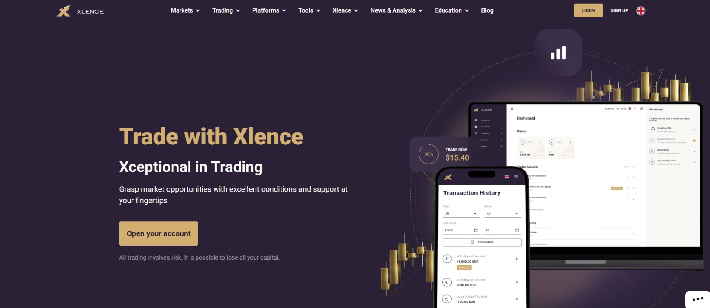
개인정보 제공 및 약관 동의 체크박스를 클릭한 후, 최하단 '계좌 개설' 버튼을 클릭하면 완료됩니다.
로그인
가입이 정상적으로 완료되면 로그인 화면으로 이동합니다.
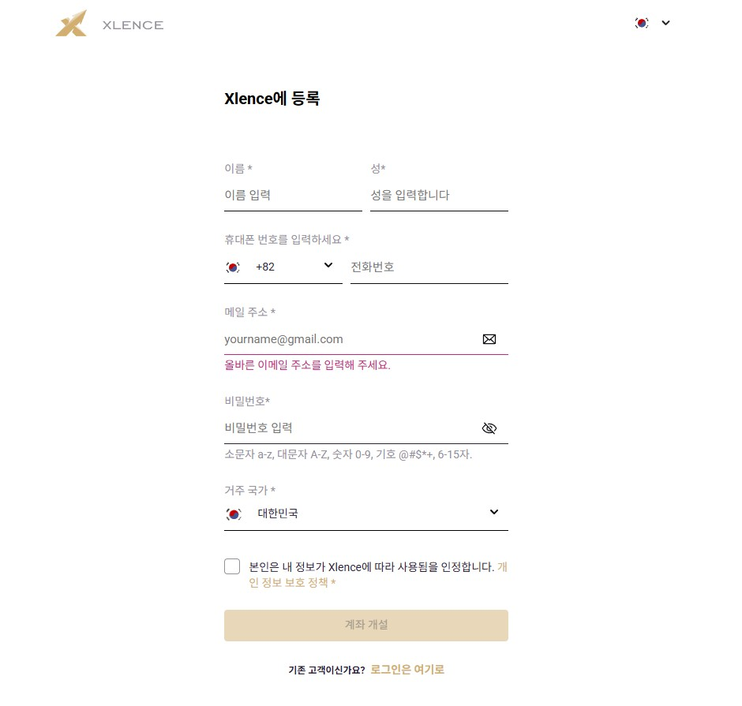
정보를 기입한 뒤 '로그인' 버튼을 클릭하여 대시보드로 진입해 주세요.
이메일 및 모바일 인증
- 로그인 후 대시보드 우측 상단의 메뉴 아이콘(≡)을 클릭합니다.
- Profile → Account 메뉴를 차례대로 선택합니다.
- 이메일(Email) 항목의 우측에 있는 ✏️ (편집) 아이콘을 클릭하여 이메일 인증 메일을 발송하고, 링크를 클릭하여 인증을 진행합니다.
- 휴대폰(Mobile Phone) 항목도 마찬가지로 ✏️ 아이콘을 클릭하여 인증번호를 문자(SMS)로 받아 인증을 완료합니다.
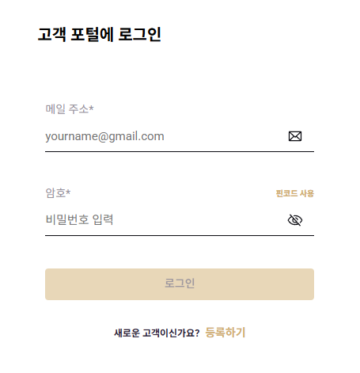
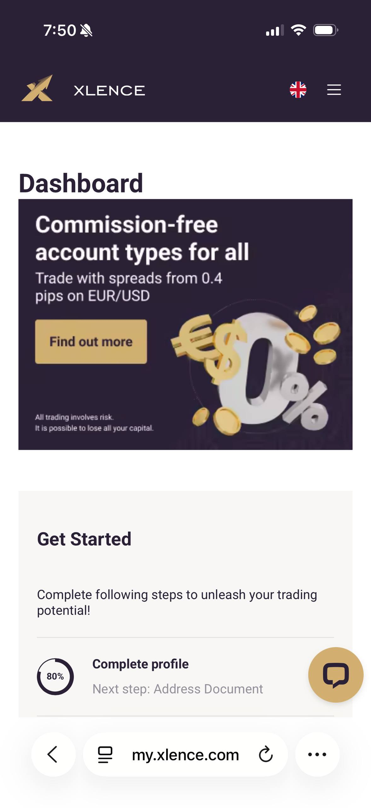
Account 이동" class="zoomable-img">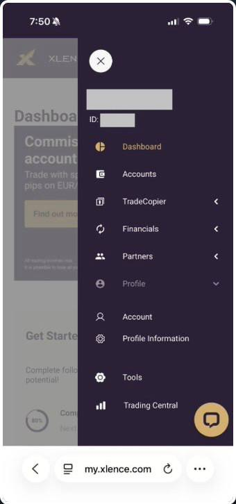
인증이 올바르게 완료되면 상태 표시가 Verified로 변경되었는지 꼭 눈으로 확인해 주세요.
신원 정보 입력
- 우측 상단 ≡ 메뉴 → Profile → Profile Information을 클릭합니다.
- Personal details 섹션 우측의 ✏️ (편집) 버튼을 클릭하여 정보를 작성합니다.
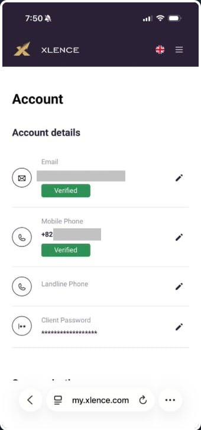
주소 입력 전 필수 숙지사항
주소를 기입할 때는 반드시 제출할 신분증(주민등록증, 운전면허증, 또는 여권)에 기재되어 있는 앞면 주소와 동일하게 기입하셔야 합니다. 앞면에 기재되어 있는 주소를 영문 변환후 입력 진행후 동일하게 주소문서 또한 영주권 탭 선택후 -> 신분증 또는 운전면허증 앞면 사진으로 업로드 진행해주셔야 합니다.
주소 입력
- Address details 섹션 우측의 ✏️ 버튼을 클릭합니다.
- 모든 주소 정보는 영문으로 변환하여 기입해야 합니다.
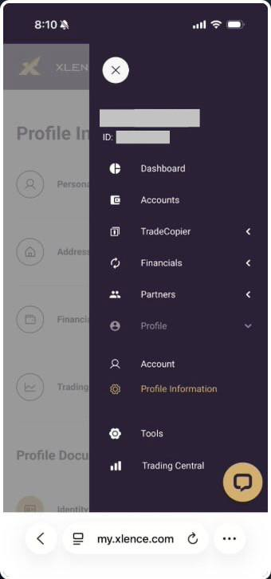
영문 주소는 네이버나 구글 영문 주소 변환기를 통해 한글 주소를 입력하시면 간편하게 영문으로 확인 및 기입할 수 있습니다.
Financial Profile 입력
Financial Profile 섹션 우측의 ✏️ 버튼을 누른 뒤, 해외 금융 규제 준수를 위한 재정 정보를 아래 예시 가이드를 참고하여 입력합니다.
| 항목 | 설명 | 예시 입력값 |
|---|---|---|
| Country of Tax Residence | 거주 국가 | Republic of Korea |
| TIN | 주민번호 전체 | 본인 주민등록번호 13자리 전체 입력 (하이픈 생략) |
| Employment Status | 고용 형태 | Self Employed (자영업) 또는 본인 고용 상태 |
| Source of Funds | 자금 출처 | Saving/Investments (저축/투자) |
| Nature of Business | 비즈니스 성격 | FinancialServicesOther (금융서비스 등) |
| Expected deposit (12M) | 1년간 예상 입금액 | $50,000 - $100,000 |
| Estimated Annual Income | 연간 추정 소득 | $50,000 - $99,999 |
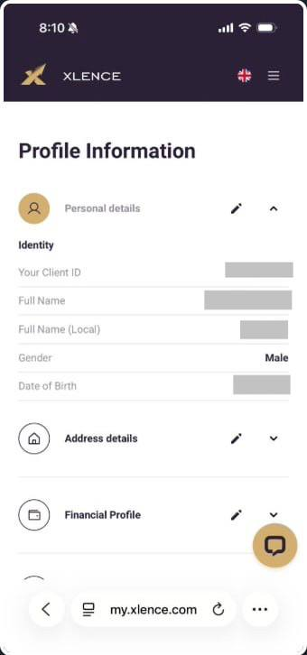
Trading Experience 입력
Trading Experience 섹션 우측의 ✏️ 버튼을 눌러 과거 거래 경험 정보를 기입합니다. 아래 수치는 권장 예시이며 본인의 성향에 맞추어 유연하게 기입하셔도 무방합니다.
| 자산 종류 (Asset) | 빈도 (Frequency) | 금액 (Amount) |
|---|---|---|
| Forex and CFD's | Occasionally (때때로) | $50,000 - $100,000 |
| Securities (주식 등) | Rarely (거의 없음) | $10,000 - $20,000 |
| Other Derivatives (파생상품) | Rarely (거의 없음) | $10,000 - $20,000 |
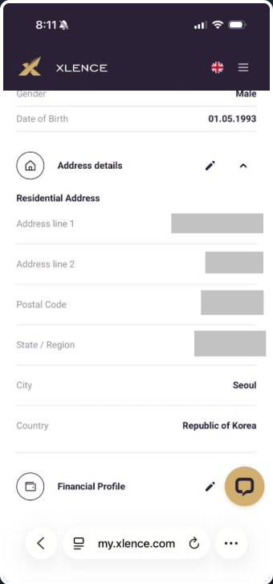
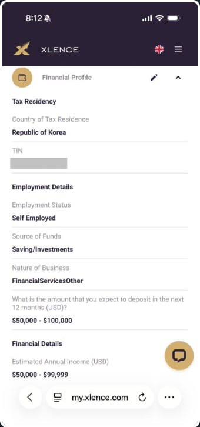
위 항목은 규제 요구 사안을 충족하기 위한 예시 입력값입니다. 참고용으로 활용하시기 바랍니다.
신분증 업로드 (KYC)
- 대시보드의 Profile Documents 섹션으로 이동합니다.
- Identity Document 항목 우측의 👁️ (보기/업로드) 아이콘을 클릭합니다.
- 제출할 신분증 종류를 선택합니다: 여권(Passport), 주민등록증(National ID Card), 운전면허증(Driving License) 중 택일.
- 촬영해 둔 신분증 앞면(및 뒷면) 사진을 업로드합니다.
매우 중요: 업로드 전 검토
업로드하는 신분증에 나와 있는 주민등록상 주소와 Step 5에서 입력한 영문 주소가 정확하게 일치해야 심사가 반려되지 않습니다. 추후 주소 인증을 추가 요청받을 시에도 동일한 신분증을 제출하시면 원활하게 처리됩니다.
업로드가 끝나면 서류 심사가 시작되며, 통과 시 다음과 같이 초록색 승인 상태로 바뀝니다.
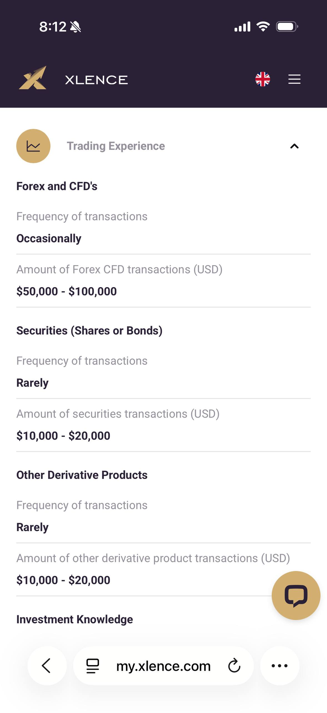
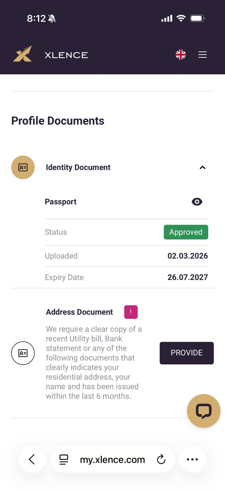
주소 문서 업로드 (간편)
프로필 설정 → 거주지 증명 문서 또한 증빙 완료되실 경우 알고리즘 기반 전략 운용 구동이 가능합니다.
신분증 또는 면허증으로 KYC 인증하셨을 경우, 1차 주소 기입란 또한 신분증 또는 면허증 앞면 주소를 영문 변환하여 입력 후 → 주소 문서 업로드 시 → 영주권 선택 → 신분증 앞면 사진 업로드하시면 5분 내 승인됩니다.
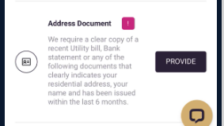
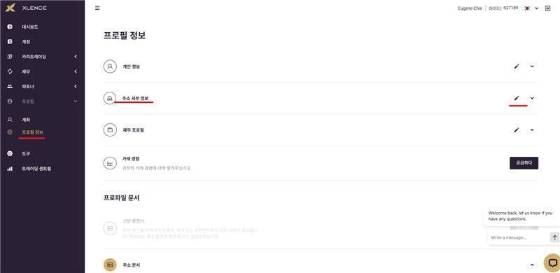
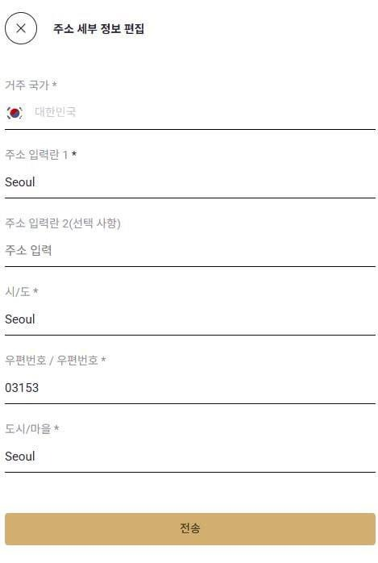
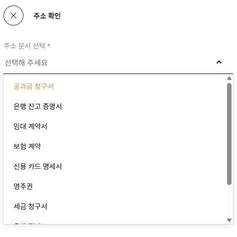
사전 필수 조건: 반드시 가입 및 KYC 인증(신분증 승인)이 최종 완료된 상태에서 계좌를 생성하셔야 합니다.
메뉴 → Accounts 클릭
로그인하여 대시보드에 진입한 후, 상단에 위치한 글로벌 메뉴 탭 중에서 Accounts 탭을 클릭하여 계좌 관리 화면으로 진입해 주세요.
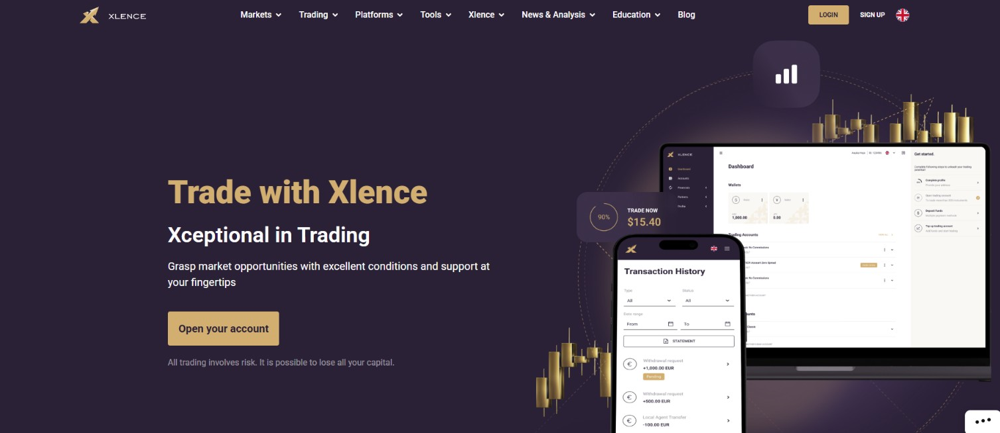
ADD ACCOUNT 클릭
계좌 관리 화면 중간에 위치한 Trading Accounts 섹션 내 우측의 ADD ACCOUNT 버튼을 클릭합니다.
실수 주의
아래쪽에 있는 'Demo Accounts' 섹션 하단에도 ADD ACCOUNT 버튼이 있습니다. 실제 거래를 위한 계좌 생성이므로 데모 계좌의 ADD ACCOUNT는 클릭하지 마십시오.
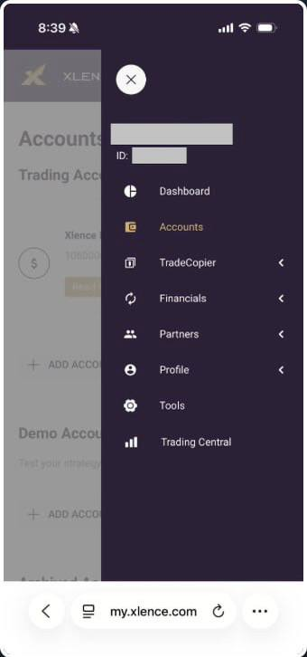
Live Trading Account 선택
계좌 유형 선택 창이 뜨면 Live Trading Account 라디오 버튼을 선택하신 후 NEXT 버튼을 클릭합니다.
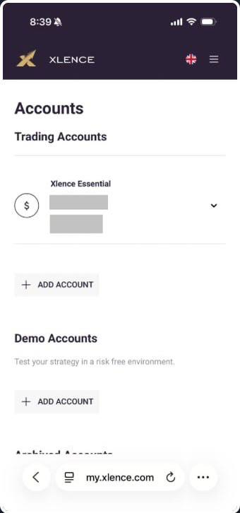
계좌 설정 입력
실제 메타트레이더4(MT4) 거래에서 연동할 실계좌의 하부 옵션들을 아래와 같이 맞추어 작성 및 선택해 주세요.
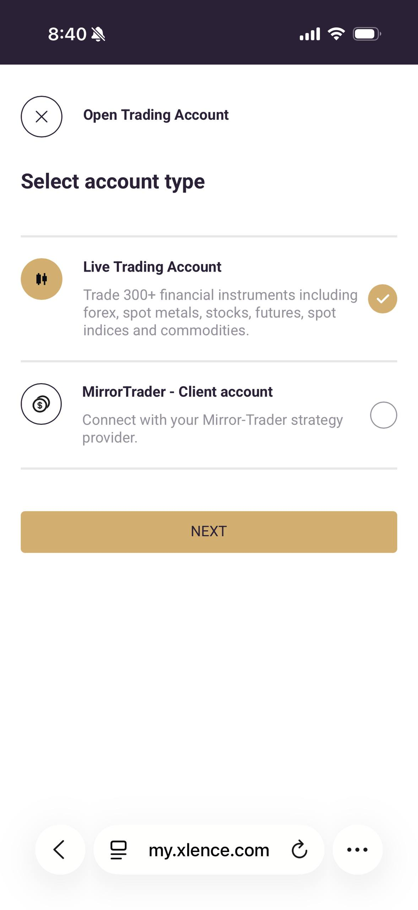
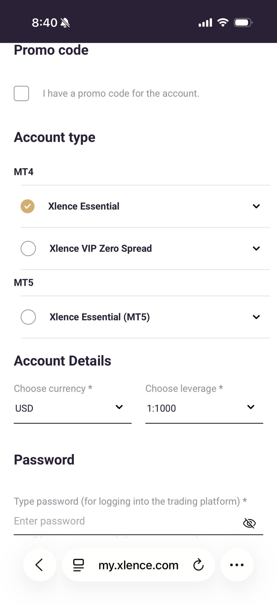
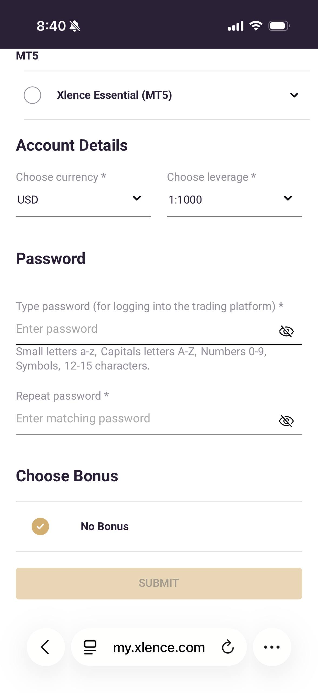
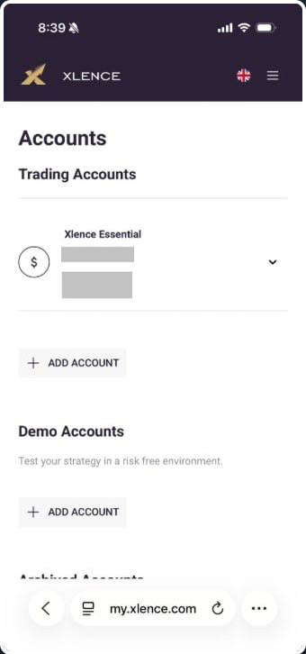
모든 사항 입력 완료 후 하단의 SUBMIT 버튼을 클릭하면 거래 실계좌번호가 발급되며 계좌 생성이 정상적으로 마무리됩니다.
국내은행 입금방법 가이드 (PDF)
가이드 다운로드입금하기 → 온라인 뱅킹 송금 선택
- 로그인 후 대시보드 화면 중앙의 메인 메뉴에서 '입금하기' 버튼을 클릭합니다.
- 다양한 입금 결제 수단 중에서 국내 은행 이체를 지원하는 '온라인 뱅킹 송금' 아이콘을 찾아서 클릭해 주세요.
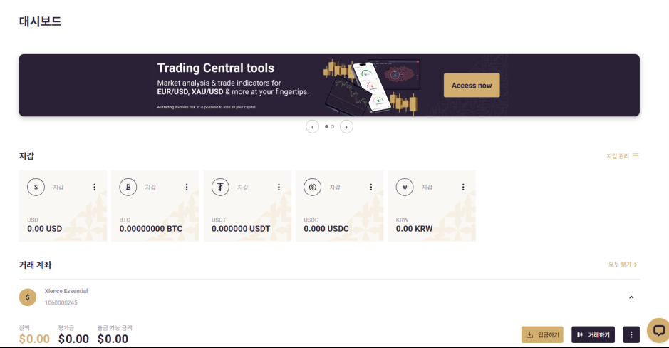
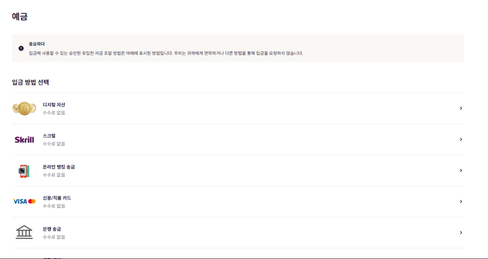
통화 및 금액 입력
국내 은행에서 원화(KRW)로 송금하므로 통화가 올바르게 지정되었는지 검토합니다.
금액 설정을 정상적으로 완료하셨다면 하단의 '전송' 버튼을 눌러 다음 단계로 진행합니다.
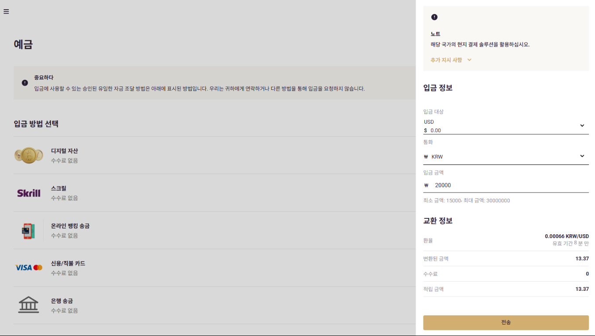
이용약관 동의
입금 거래 조건 및 환율 변동 주의사항에 대한 이용약관 동의 화면이 표시됩니다. 내용 검토 후 체크박스를 선택하고 '다음' 버튼을 클릭합니다.
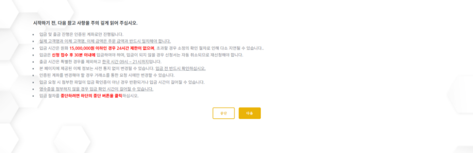
가상계좌 발급 및 입금
이용약관 승인이 완료되면 화면에 본인 거래 전용 임시 가상계좌(은행명, 계좌번호, 입금주명)가 표시됩니다.
가상계좌 유효시간 엄수 (30분)
발급된 가상계좌의 유효시간은 발급 시점으로부터 30분입니다. 30분 이내에 인터넷 뱅킹이나 모바일 앱을 통하여 기입한 입금 금액과 정확히 동일한 액수를 계좌로 이체해야 정상 완료됩니다. 시간이 경과할 시 계좌가 자동 폐기됩니다.
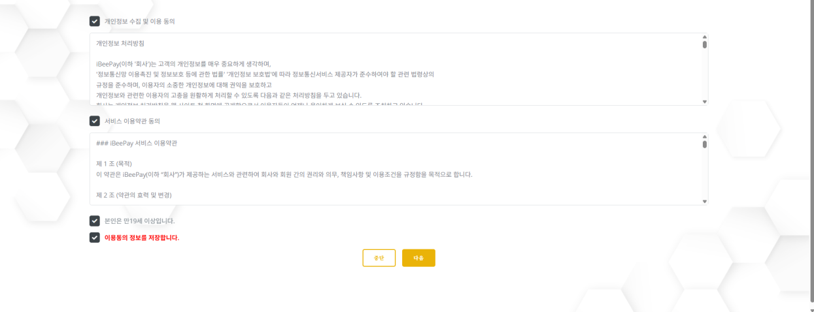
입금 완료 확인
이체 처리가 성공하면 브로커 측에서 확인 절차를 밟습니다. 거래 대시보드의 입출금 내역 상태를 통해 확인이 가능합니다.
상태 코드가 '완료'로 승인 처리되면 고객님의 USD 지갑 또는 계좌에 환산된 달러 금액이 최종적으로 반영됩니다.
만약 가상계좌로 정상 이체 완료 후 20~30분 이상 지연되어 입금이 반영되지 않는다면, 즉시 텔레그램 공식 헬프데스크 계정인 @kr_helpdesk로 문의해 주시기 바랍니다.
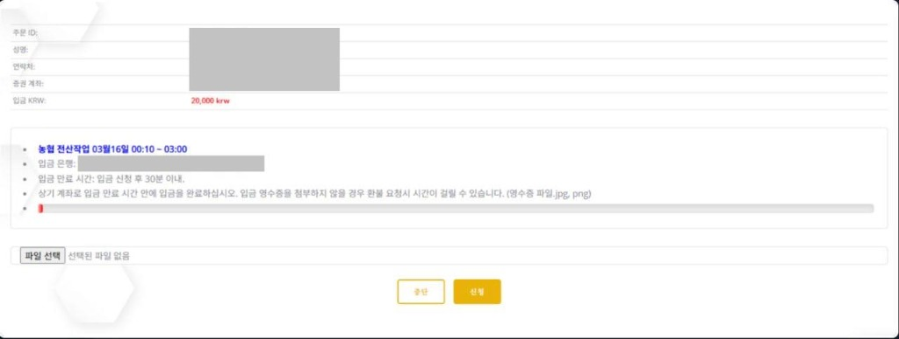
국내은행 출금방법 가이드 (PDF)
가이드 다운로드내부이체 → 인출 진행
- MT4 거래 계좌에 들어 있는 자금을 출금하기 전, 먼저 대시보드의 '내부 이체' 메뉴를 이용해 출금하고자 하는 금액을 본인의 원화(KRW) 월렛으로 이체시킵니다.
- 이체가 완료되어 원화 지갑에 잔액이 표시되면, 바로 옆의 '인출' 버튼을 클릭합니다.
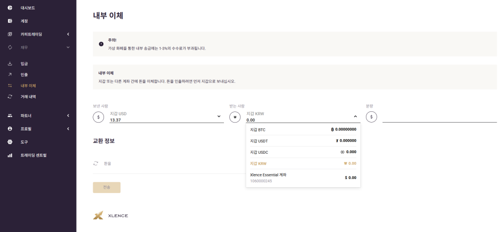
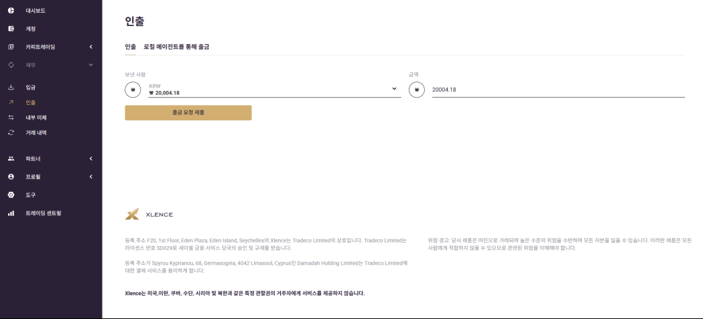
출금 수단 선택 및 PIN 입력
- 인출 결제 옵션 화면이 표시되면, 출금 수단으로 '온라인 뱅킹 송금'을 선택합니다.
- 선택 후 본인의 보안 유지를 위하여 회원가입 시 기재했던 이메일로 자동 수신된 6자리 PIN 코드를 입력창에 기입합니다.
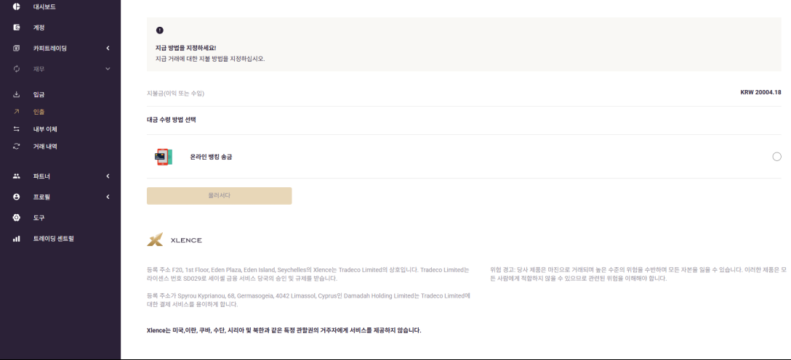
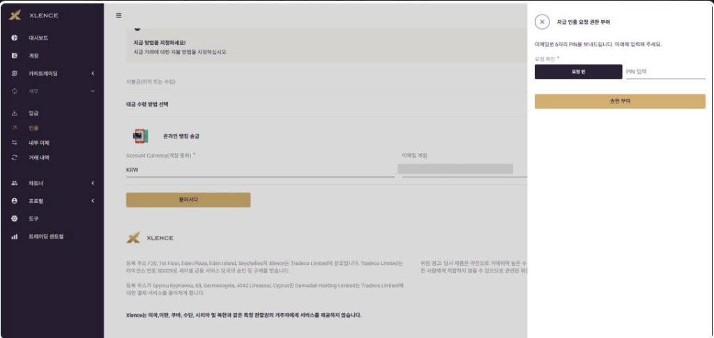
출금 완료 및 입금 확인
출금 신청 서류가 브로커 백오피스 담당 부서에 도달하면 순차적으로 자금 승인 처리가 실행됩니다.
상태 정보가 '완료'로 갱신되면 정상적으로 지정하신 국내 은행 계좌로 출금 원화가 입금 완료됩니다.
출금 이체가 2~3시간 이상 과도하게 미반영되어 처리가 미뤄진다면, 텔레그램 공식 소통망 @kr_helpdesk로 문의주시면 처리 현황을 피드백 받으실 수 있습니다.
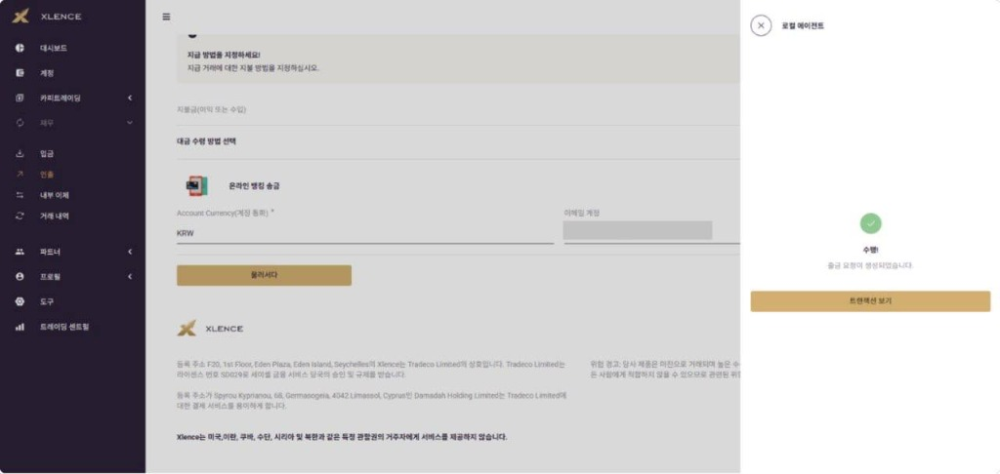
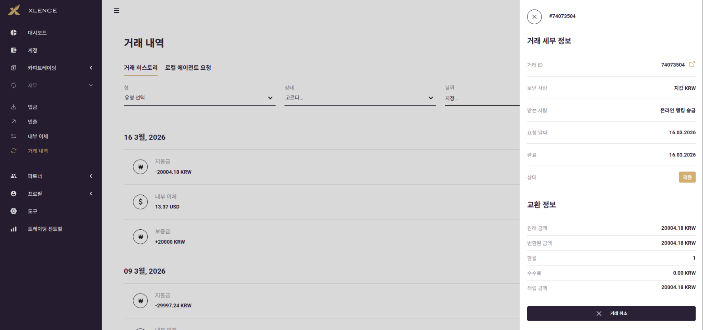
입금하기 → 디지털 자산 선택
- 메인 대시보드 화면에서 '입금하기' 메뉴를 클릭합니다.
- 입금 수단 중 '디지털 자산' 아이콘을 찾아 선택합니다.
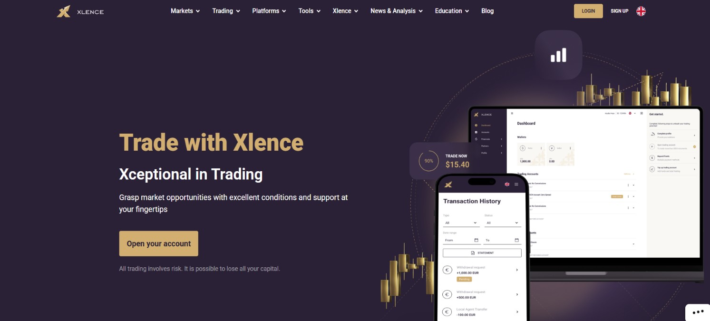
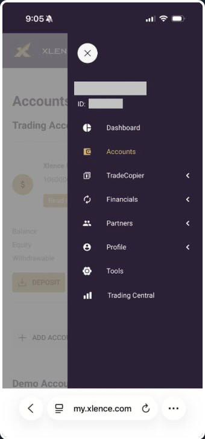
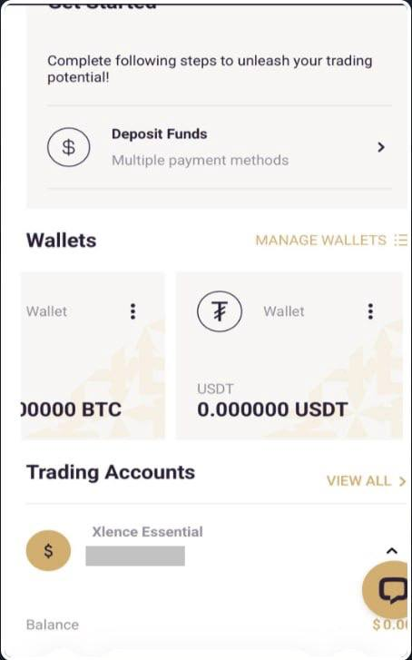
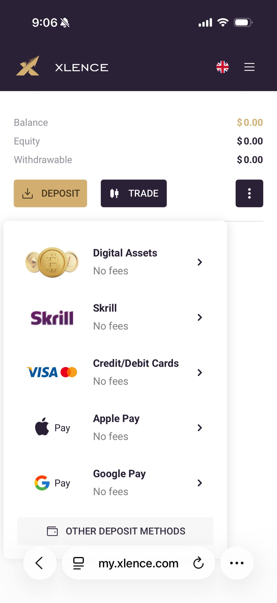
입금 정보 설정 및 지갑 주소 복사
입금하고자 하는 코인 종류와 입금 받을 블록체인 네트워크 규격을 정밀하게 확인해 주세요.
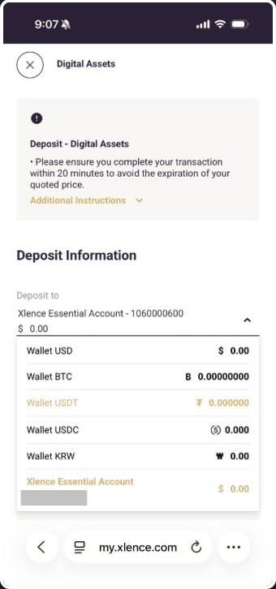
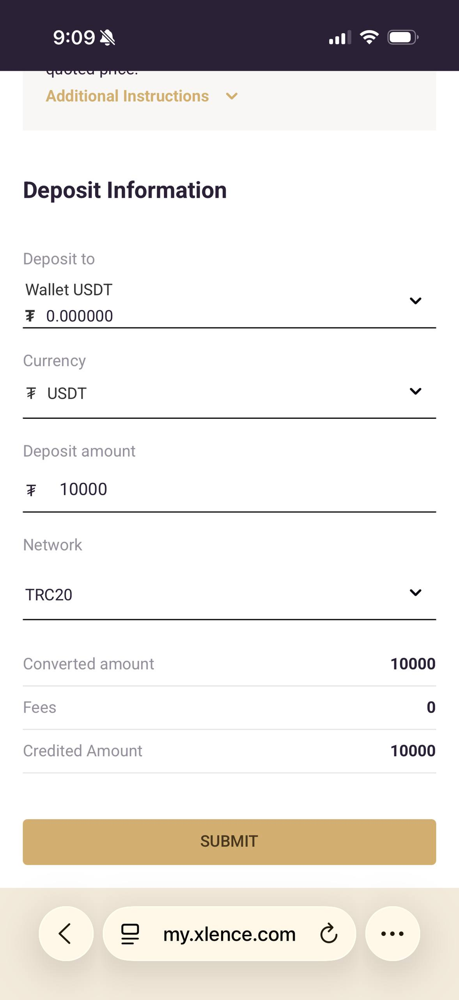
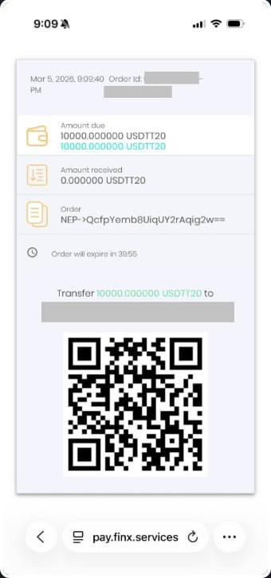
발급된 주소의 '복사' 버튼을 클릭하여 안전하게 복사해 둡니다. 주소 기입 실수를 막기 위해 가급적 텍스트를 메모장에 미리 붙여넣어 확인하시는 것을 권장합니다.
본인 이용 거래소에서 출금 전송
이용하고 계시는 해외/국내 가상자산 거래소(예: OKX, Binance, Bybit, Bitget 등)의 자산 출금(Withdrawal) 탭으로 이동합니다.
- 출금 코인 종류: USDT
- 출금 주소란: 방금 복사해 둔 Xlence 전용 지갑 주소를 붙여넣기 합니다.
- 네트워크 지정: 반드시 TRC-20 (TRON)을 수동 선택해 주세요.
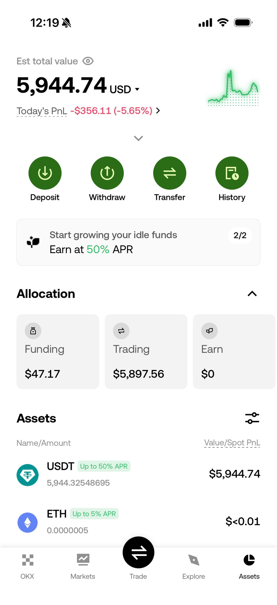
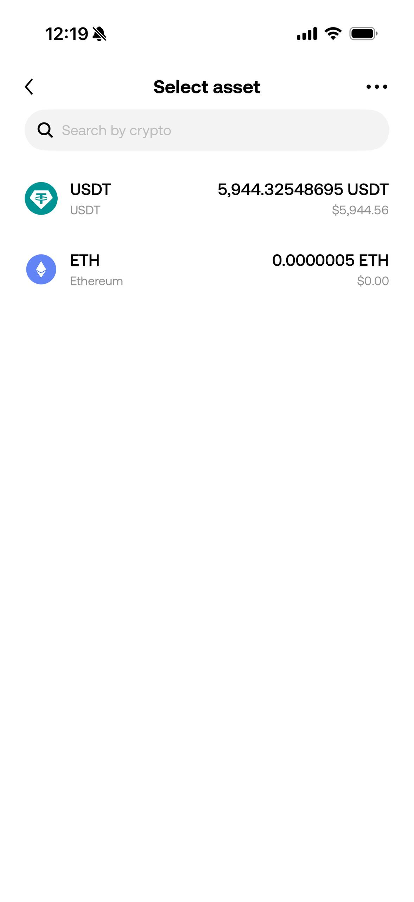
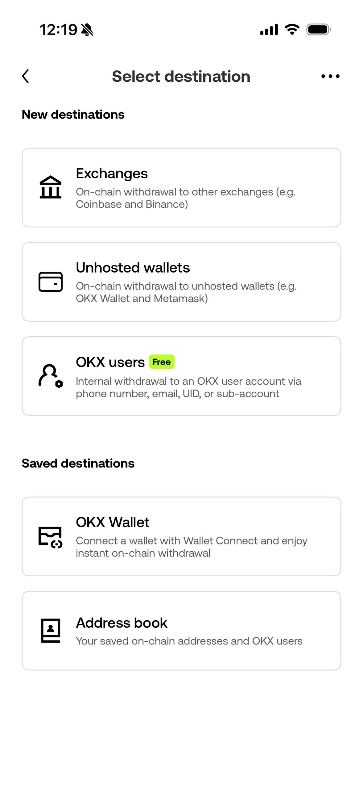
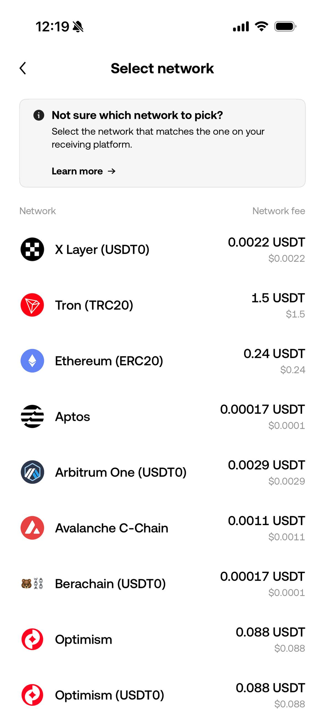
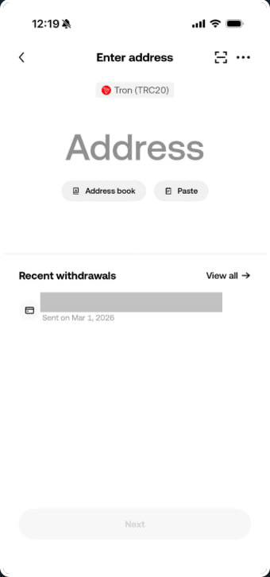
네트워크 오선택 경고 (영구 오입금 위험)
보내시는 거래소와 받는 브로커의 네트워크는 무조건 동일해야 합니다. Xlence는 TRC20 네트워크를 지원하므로 ERC20, BSC 등의 타 네트워크를 선택해 전송할 경우, 전송된 자산이 블록체인 상에서 영구히 분실되므로 절대 주의 바랍니다.
입금 승인 완료 확인
거래소에서 블록체인 네트워크 승인이 완료되면 대시보드의 자산 내역 상태가 '완료(Completed)'로 바뀌며 5~15분 이내에 잔고가 충전됩니다. 문의사항 발생 시 텔레그램 헬프데스크로 요청 주세요.
인출 신청 및 정보 기입
- 출금하고자 하는 금액을 USDT 월렛으로 내부이체 합니다.
- 대시보드의 '인출하기' 클릭 후 수단으로 '디지털 자산'을 클릭합니다.
- 전송받으실 본인 개인 지갑 주소 또는 사용 거래소의 USDT(TRC20) 입금 주소를 올바르게 복사하여 붙여넣고, 신청 금액을 작성합니다.
PIN 인증 및 정산 확인
이메일로 수신된 6자리 PIN 코드를 인증란에 기입한 후 신청을 제출합니다. 백오피스 부서 검토 및 블록체인 전송까지 통상적으로 15~30분가량 소요되며, 상태가 '완료'로 승인되면 본인 지갑에 입금이 완료됩니다.
MT4 앱을 로그인하여 사용하기 전, 반드시 2단계 가이드에서 실거래 계좌(Essential 계좌) 개설이 선행되어야 합니다. 발급받으신 계좌 번호와 패스워드를 미리 준비해 주세요.
MT4 앱 다운로드 및 설치
스마트폰의 앱 마켓에서 글로벌 트레이딩 전용 단말기인 MetaTrader 4를 검색 후 인스톨해 주세요.
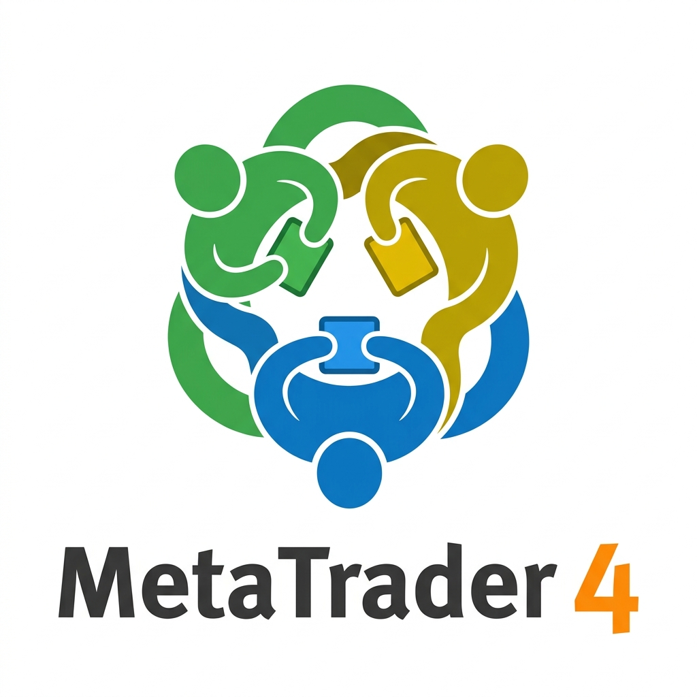
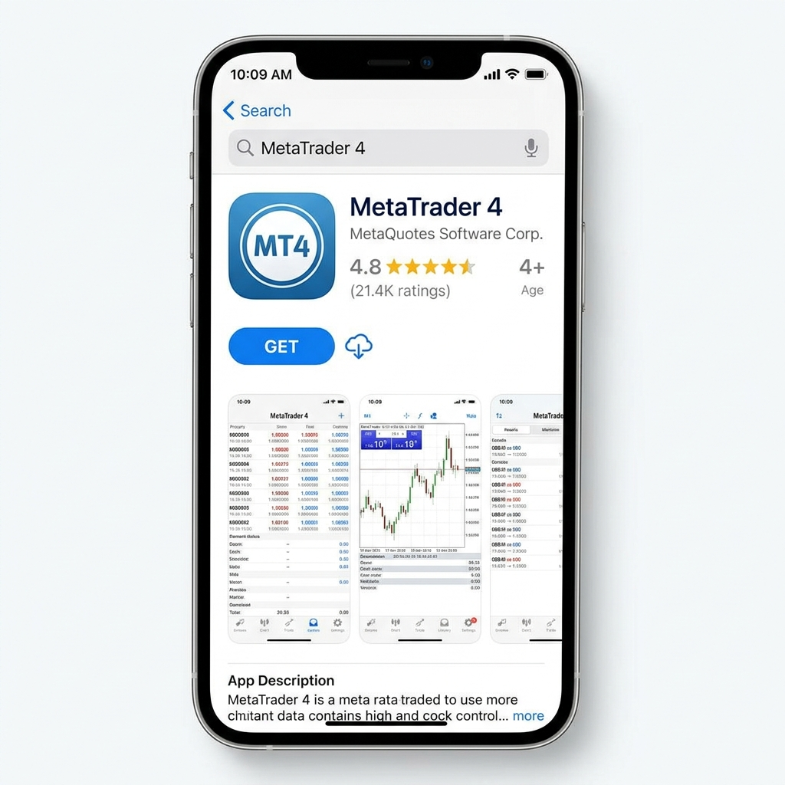
브로커 서버 검색
- MT4 앱을 실행한 후 우측 하단 설정 → '새 계좌 등록' 또는 '기존 계좌로 로그인' 메뉴를 터치합니다.
- 트레이딩 서버 검색 필드에 브로커 영문 이름인
Xlence를 직접 타이핑해 줍니다.
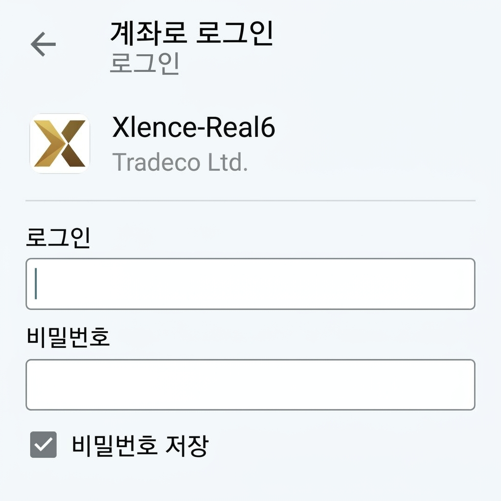
만약 검색 목록에 브로커가 조회되지 않을 경우, 하단부의 '브로커를 찾지 못했습니까?' 혹은 수동 검색을 이용해 주십시오.
서버 선택 및 로그인 정보 입력
- 검색 결과로 나타나는 서버 중 실거래 전용 라이브 서버인 Xlence-Real6 (Tradeco Ltd.)을 터치해 선택합니다.
Xlence-Real6
정확하게 기입하셨다면 하단의 로그인을 터치하여 거래소 서버 접속을 승인받습니다.
기본 인터페이스 및 메뉴 구성
로그인이 올바르게 마쳐지면 메인 화면에 아래와 같이 구성된 5개의 핵심 메인 탭들이 나타납니다.
매수/매도 신규 주문하기
- '시세' 탭에서 진입하고자 하는 타겟 통화쌍(예: EURUSD, GBPUSD 등) 항목을 찾아 1~2초간 길게 터치합니다.
- 팝업 창이 열리면 최상단의 '새 주문' 버튼을 클릭합니다.
안전 거래 가이드 (Stop Loss 리스크 관리)
체결 시 리스크 관리를 위하여 Stop Loss (손절매 가격) 설정을 필수적으로 생활화해 주십시오. 손절매 가격을 설정하지 않을 경우 급격한 장세 변동 시 대응할 틈 없이 엄청난 자산의 위기를 겪으실 수 있습니다.
포지션 실시간 관리 및 청산
- 현재 가동 중인 포지션은 하단 메뉴의 '트레이드' 탭에서 손쉽게 트래킹할 수 있습니다.
- 청산을 원할 시, 해당 포지션 영역을 길게 누른 다음 생성되는 선택지에서 '포지션 청산'을 선택해 즉각 청산 및 정산을 실행합니다.
- 실시간 총 잔고 및 잔여 평가 담보금 비율 등을 화면 최상단 상태표시를 통해 파악해 가면서 안정감 있게 자금을 가동하십시오.